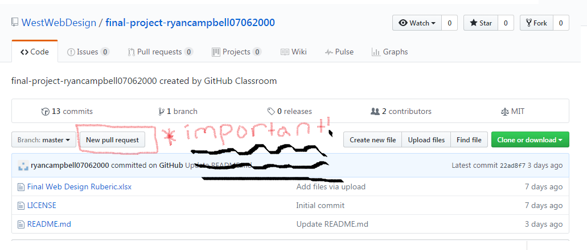

Why Github is Useful
At the very beginning of the term, Mr. Brosius introduced a complex program called Github.
At first, I was all bent because it was so complicated. After a while of trying to use it, I learned a few
of probably the many useful features is entwined with the program. For instance,
let's say one person is coding on a specific part of the page / website, and you're working on the other.
Once you both sync your changes to the master branch, and pull the new finished master copy to both of your computers,
then BOOM! YOU just got yourself a copy of what you and your partner or group accomplished.
